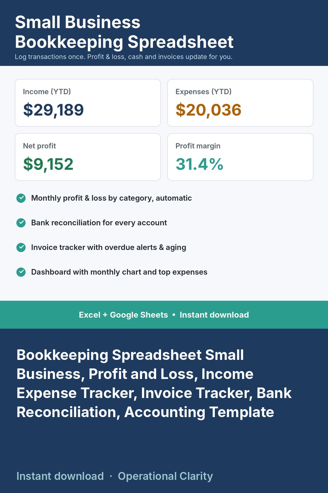

Bookkeeping Spreadsheet Small Business, Profit and Loss, Income Expense Tracker, Invoice Tracker, Bank Reconciliation, Accounting Template

SMALL BUSINESS BOOKKEEPING SPREADSHEET | Income & Expense Tracker, Profit and Loss, Bank Reconciliation, Invoice Tracker | Excel & Google Sheets | Instant Download
Keep your books in one simple spreadsheet. Log each transaction once, and your monthly profit & loss, account balances, bank reconciliation and unpaid invoices all update automatically.
WHAT IT DOES
• Transaction ledger with 2,000 rows: date, description, Income or Expense, category, account and amount, with dropdowns
• Profit & Loss: income and expenses by category for every month, plus year totals, net profit and profit margin
• 25 income and 25 expense categories you can rename to fit your business
• Cash & Reconcile: starting balance, money in, money out and book balance for up to 8 accounts (checking, savings, credit card, cash, PayPal / Stripe)
• Bank reconciliation: enter your statement balance and see the difference, with uncleared items shown
• Transfers between your own accounts change balances without affecting profit
• Invoice tracker (300 rows): Paid, Open, Due soon and Overdue status, days late, and an aging table (1-30, 31-60, 61-90, 90+ days)
• Dashboard: year-to-date income, expenses, net profit, margin, cash on hand, money owed to you, top 5 expenses and a monthly income vs expenses chart
BEST FOR
Small business owners, Etsy and online sellers, makers, service businesses and freelancers who want clean books without accounting software.
WHAT YOU GET
• 1 Excel workbook (.xlsx) with 7 tabs: START HERE, DASHBOARD, SETTINGS, TRANSACTIONS, PROFIT & LOSS, CASH & RECONCILE, INVOICES
• Example data so you can see how it works (just type over it)
COMPATIBILITY
Microsoft Excel. For Google Sheets, upload the file to Google Drive and open it with Google Sheets.
GOOD TO KNOW
• This is a bookkeeping organizer, not accounting or tax advice.
• Digital download. No physical item will be shipped.
• Personal / single-business use only. No reselling or sharing of the file.